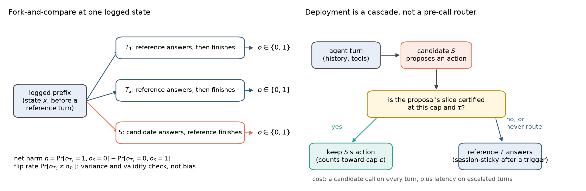
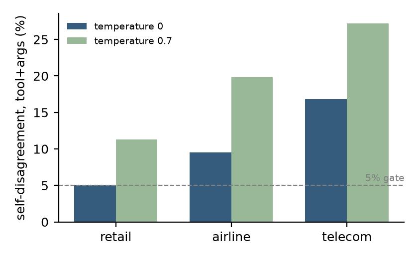
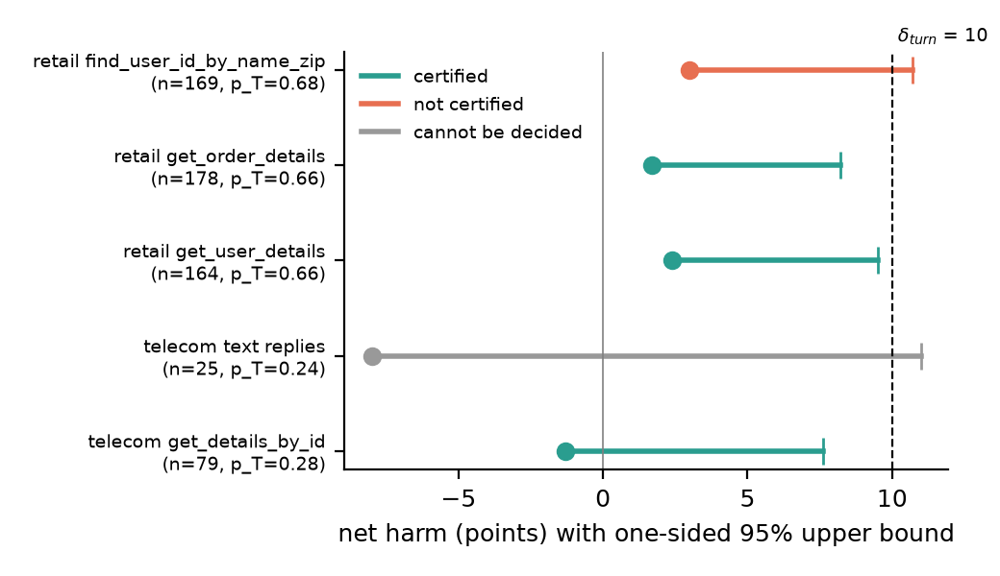
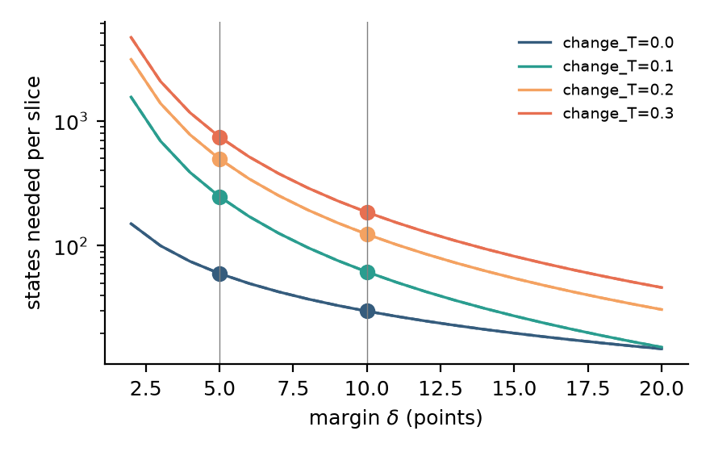
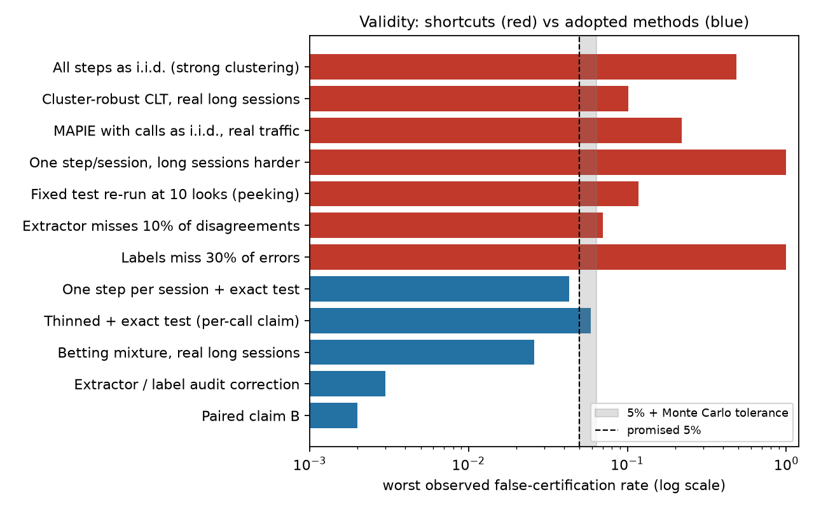

OverviewThree findings, one honest answer
TL;DR. Graduate certifies, slice by slice, where a cheaper candidate model may take over from the reference model that runs an agent today. Three findings shaped it. (1) The reference disagrees with itself on identical states 5 to 17% of the time, so "agrees with the reference" cannot prove a swap safe below that floor. (2) Safety has to be measured by effect: fork the environment at a logged state, let the candidate take one turn, let the reference finish, compare outcomes. (3) The evidence that decides a slice is counted in distinct tasks, not repeated runs, and on τ²-bench there were not enough: no per-turn slice certified, and the certifier says so instead of guessing.
At the whole-conversation level, a hybrid that lets an untrained 4B model answer nearly every turn is no worse than two Flash-class references and undecided against a Pro-class one. A 50-point win we first measured turned out to be the reference breaking its own tool contract, which the method now checks first. Training the 4B four ways moved nothing we could detect.
Read straight through for the argument. Open the panels for derivations, tables and the checks a reviewer would ask for.
01 The question"Which calls can it take over?" is not a benchmark question
An agent makes many model calls per conversation: pick a tool, fill its arguments, read the result, reply. Many are narrow and repetitive. A smaller model could make them for a fraction of the cost. The hard part is the guarantee. Agent traffic breaks the assumptions evaluation tools rely on: calls inside a conversation are dependent, several actions are often equally acceptable, the reference itself is random even at temperature 0, judges miss errors, and the data keep arriving while people look at them.
Graduate's unit of independence is the session (one conversation). A slice is one kind of decision: call type, tool, position in the session. The product of the analysis is a report card: for each slice, certified, not certified, cannot be decided with this evidence, or never route.

02 The reference disagrees with itselfAgreement has a floor, and the floor is the reference's own noise
The cheapest certificate is agreement: does the candidate make the same call the reference made? Before scoring any candidate, we re-asked the reference (Gemini 2.5 Flash) on its own logged states, four times each, through the agent's own call path.

A 5% agreement gate is at or below the reference's own noise on telecom and at its edge on retail. No candidate can certify those tool slices by agreement, whatever its quality. Agreement stays a diagnostic. The certificate has to be by effect.
Why self-noise is a variance, not a bias, in the effect-based test
In the fork design below, two reference continuations T1 and T2 are exchangeable, so the expected net harm of the reference against itself is zero. The flip rate between them enters the sizing of a slice, a validity check (the measured reference-vs-reference harm must sit within noise of zero), and nothing else. It does not shift the bound.
03 Certify by effectFork the conversation, let the candidate take one turn, compare outcomes
τ²-bench can replay a conversation prefix into a fresh database. From a logged state we run three branches to the end: T1 and T2, the reference continuing; S, the candidate answering that one turn and the reference finishing. Each branch ends with a task outcome, pass or fail.
The certified quantity is the signed net harm: how often the candidate's turn turned a pass into a fail, minus how often it turned a fail into a pass. A slice certifies at cap 1 when a one-sided finite-sample upper bound on net harm is at most the margin. Two rules came from the data: a slice is vacuous if the reference itself rarely succeeds there, and a slice is never-route if harm is likely and could exceed half the reference's own success.

| Slice (the 4B's proposal) | Tasks | Net harm | Finite-sample upper | Verdict at a 10-point margin |
|---|---|---|---|---|
| retail get_order_details | 58 | +0.9 | 12.4 | not certified |
| retail get_user_details | 53 | +2.5 | 15.9 | not certified |
| retail find_user_id_by_name_zip | 41 | +0.2 | 16.3 | not certified |
| telecom get_details_by_id | 50 | +2.0 | 18.7 | cannot be decided |
| airline get_reservation_details | 25 | +1.5 | 19.9 | cannot be decided |
| airline cancel_reservation (32B candidate, 33 states) | 8 | +90.9 | — | never route |
The harm is small. What is missing is tasks. Under the rule we pre-registered, three of these slices certified; under the corrected bound of section 07, none does, and each would need roughly 76 to 193 distinct tasks. One slice was decided the other way from only 33 states: when the 32B proposed cancelling a reservation, the reference's 94% success fell to 3%. Catastrophes are cheap to find; safety is expensive to prove.
04 Evidence is counted in tasksRepeating runs does not buy certification; distinct tasks do
Forks of the same task are correlated, so the task, not the state, is the unit. The number of tasks a slice needs grows with the margin you want to prove and with the reference's own flip rate. The planner below is the one the certifier prints on every undecided slice.
States needed: n ≥ max(3/δ, (1.645+0.84)²·flip/δ²), a one-sided 95% bound at 80% power. Minimum detectable harm with n tasks: max(3/n, 2.485·s.d./√n). Defaults are the retail get_order_details slice.

Our retail held-out set had 15 tasks. Every per-slice failure before the fresh-state run was "cannot be decided", not "failed", and the planner would have said so before any training run was paid for.
05 A result we withdrewThe 50-point win was the reference breaking its own tool contract
The first pre-registered whole-conversation exam returned regret of −50.6 points: the hybrid beat the reference by half the scale. Before reading that as real we checked termination reasons and tool use per arm, and three independent reviews of the repository found what that check had missed.
In 94% of telecom sessions the reference called tools that do not exist in the agent's tool list: the customer's own device tools, named in the published policy manual in sentences that read as instructions. It ran with thinking on while the candidate ran thinking off, and only the hybrid had a validity shield. The pooled verdict was a telecom-pool result against a reference that mostly failed. We report the exam as computed and withdraw it as evidence about the candidate.
What the certifier should have printed is a reference contract card: a reference that breaks its tool contract in most sessions is not an admissible comparator on that domain. The card is now computed per reference, per domain, before any comparison, with a pre-declared 20% threshold. Three successor references under the same policy and tool list break the contract in 0% of sessions; the defect belonged to one model under one prompt.
The symmetric re-examination
With reference arms matched to the candidate, the one-retry shield hid the violations (0% executed, 74% attempted) without changing the outcome. A one-line policy fix removed them (0% attempted) and nearly doubled the reference's success, to 37.5%. Against that repaired reference the hybrid is non-inferior at a 10-point margin on the 40 telecom test tasks (regret −41.2, finite-sample upper −19.7), at the task level only: with three issue types as clusters, no bound can decide. The repaired reference still fails most telecom tasks, so the claim is narrow and stated as such.
06 What the exams showSupported against cheap references, open against the expensive one
With admissibility checked first and every bound under the corrected rule, four pre-registered exams ran on tasks the candidate was never trained on. The arm is a hybrid: the 4B answers from the first turn until an invalid tool call, then the reference finishes. Regret is reference success minus hybrid success, so negative is good for the hybrid.
| Reference | Tasks | Reference | Hybrid | Regret | Upper (95%) | Verdict at 10 points |
|---|---|---|---|---|---|---|
| Gemini 2.5 Flash, thinking off | 131 retail + airline write tasks | 32.8 | 59.9 | −27.1 | −15.3 | non-inferior |
| Gemini 3.8 Flash, minimum thinking | 140 telecom tasks | 70.0 | 85.0 | −15.0 | −6.0 | non-inferior, task level |
| Gemini 3.1 Pro preview, minimum thinking | 104 retail write tasks | 73.1 | 65.9 | +7.2 | +20.4 | cannot be decided |
The Flash references ran with thinking off or at its minimum, as the candidate did. With thinking on, 2.5 Flash scored about 10 points more on retail, a difference the exam could not detect. Against the strongest reference we ran, where a cost saving would matter most, the comparison is undecided.
Routing only the formerly certified slices: one turn moved success by 16 points
A hybrid that routed to the 4B only on the slices the old rule had certified, at most one turn per session, routed 6.5% of agent turns and still scored 21 points above the reference alone. A control with the same scaffold and nothing routed separated the sources: the scaffold changed nothing we could detect (+5.0, interval −5.3 to +15.2), while routing one turn added +16.0 (interval +4.2 to +27.9). One early turn, an authentication step or the first lookup, changes the rest of the conversation. A per-turn harm bound composed by the union bound does not describe that, and the slices in question no longer certify. Exploratory.
Training the 4B: four recipes, three seeds, no detectable change
SFT on a same-family 9B's successful runs: −4.2 points (seed s.d. 6.4). GRPO: 0.0 (1.4). WAPO: +8.3 (4.8). JOLT+: +6.0 (5.8) after only five or six updates. No arm exceeded the frozen two-standard-deviation rule, and a single exam on 36 tasks detects about 20 points. The two recipes with a prior for improvement moved up and SFT moved down, which is a direction at a pilot budget, not an effect.
07 A bound we got wrongAn external review found it, a simulation measured it, and the replacement is proved
During the study, fork and session claims used the stricter of a task-clustered bootstrap and an "exact" bound conditional on the discordant states. After the study, an external review showed that the conditional bound treats the discordance rate as known and returns the point estimate when the candidate is never better. Our validity grid had drawn the candidate's branch independently of the reference's, so every cell had two-sided discordance, and in that regime the rule held. It does not hold when a candidate is sometimes worse and never better.
| Procedure (nominal 5%) | Worst false certification |
|---|---|
| Conditional exact bound alone, 30 states, one-sided null | 67% |
| Stricter of exact and bootstrap (as used), 30 / 60 / 178 states | 20% / 14% / 5% |
| Task-cluster t bound on forks (91 of 96 cells over tolerance) | 46% |
| Task-level finite-sample betting bound (adopted), 120 cells | 1.1% |
The replacement is a betting bound on per-task differences with tasks as the unit, valid in finite samples by construction, with false-discovery control by e-BH across slices. Every verdict in the paper is reported under both rules; the per-slice certificates did not survive the change.
Proposition and proof sketch
Let tasks be exchangeable and dt ∈ [−1, 1] be task t's mean of worse minus better, with h = E[dt]. For a candidate margin δ, run the betting process on dt − δ with predictable bets in [0, c/(1−δ)] and average the final capital over a fixed set of task orders. Under h ≥ δ each factor has conditional expectation at most 1, so the capital is a non-negative supermartingale and its final value an e-value; an average of e-values is an e-value; Markov gives P(Ē ≥ 1/γ) ≤ γ. Inverting over δ gives an upper bound U with P(h > U) ≤ γ. e-BH on the per-slice e-values controls the false discovery rate under arbitrary dependence between slices (Wang and Ramdas, 2022).

08 LimitationsWhat this evidence cannot say
- One benchmark, one user-simulator family. Every verdict rests on a Gemini user. Two second-family simulators agreed in direction and failed their pre-registered fidelity gates.
- References matched to the candidate. Flash ran with thinking off or at its minimum; at its default it is stronger, by an amount we could not resolve.
- No per-turn certificate yet. A 10-point certificate needs 76 to 193 distinct tasks per slice on this pair, more than τ²-bench's train splits provide per tool.
- Session dependence. Per-turn bounds compose only by the union bound; the composition curve we measured rests on an inadmissible reference and is not claimed.
- Generation budget. Candidates ran at 256 new tokens per turn and about 20% of turns hit the cap; a 1,024-token arm detected no difference, on a small test.
- Pinned benchmark commit. Later τ²-bench releases replaced 50 of 114 retail and telecom tasks; numbers are not comparable across versions.
09 Questions and checksWhat a reviewer would ask, and what we checked
- Isn't the slice selected by the candidate's own output? Does the guarantee survive that?
- States are sampled before the proposal is seen and grouped by the proposal afterwards; the bound is computed within the group, so it is a bound on harm conditional on the candidate proposing that action, which is exactly the population the cascade routes. Thresholds and caps are chosen on a disjoint split.
- Could the endpoint, the prompt rendering or the token budget explain the numbers?
- Three pre-registered checks: an A/A test between endpoints, our completions path against the server's chat path, and 256 against 1,024 new tokens. None differed beyond noise. Each test is small, so "no difference detected" is the claim, not "interchangeable".
- Is the 4B contaminated on τ²-bench?
- Qwen's published material names τ²-bench as an evaluation target. The 4B does 13 points worse on the official telecom split than on unused tasks of the same issue types, the opposite of memorisation; paraphrasing 20 retail scenarios changed success by an amount that includes zero. None of this rules out contamination of the task generator. In our harness the 4B and 9B score about 10 points below their self-reported τ² numbers at Qwen's recommended settings.
- Why not just use the candidate alone?
- On these exams the 4B alone matches the hybrid against the Flash references. The hybrid's value is the handover on invalid calls and the never-route list; the certificate's value is knowing which slices to trust, which this data could not yet establish.
- What changed during the study?
- The per-turn margin went from 5 to 10 after the first attempt certified nothing; telecom clustering moved from issue types to tasks because three clusters cannot decide anything; the fork and session bound was replaced after the external review. Each change is dated in its pre-registration and both readings are reported.
- What did it cost?
- About $225 of API spend, about 60 L4-hours and 50 A100-hours, itemised in the paper's compute appendix.
Where this leaves usThe certifier is the asset; the evidence is the bottleneck
We set out to distil a reference into a small student and prove where it could take over. The students lost to untrained open models, the first "graduation" did not survive its audit, and the per-turn certificates did not survive a corrected bound. What the work produced is the instrument that could say all of that with error control: a reference contract card, a planner that counts the tasks a slice needs, an effect-based test that needs no judge, and a cascade whose cost is counted honestly. If you run an agent, run the contract card first, size your slices before you train anything, and certify by effect where your environment can be replayed.
Code and report cards · Paper: Where Can a Cheaper Model Take Over an LLM Agent? Certifying Partial Replacement from Logged Traces (arXiv link to follow).